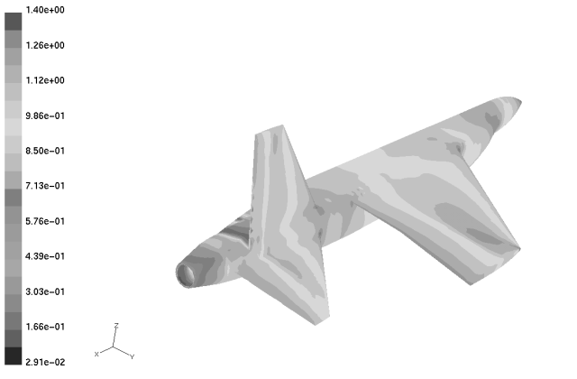

Origins of the Commercial CFD Industry
Some may remember the 1980s for its over-the-top fashion (think big shoulder pads), even bigger hair styles, action movies (who can forget The Terminator?) and the Gordon Gekko greed is good mantra. Others will remember the introduction of personal computers - a "dent in the universe" to quote Steve Jobs of Apple. A few may even remember that the origins of the commercial Computational Fluid Dynamics (CFD) software industry can be traced to a small number of pioneers in the 1980s. If you are one of the few then maybe you'll find this post on the origins of commercial CFD will stir a few fond memories.
Rampant Results: Appeared in my EngD thesis
CHAM
Brian Spalding became a leading light in the nascent field of CFD when in 1972 he, along with his Imperial College colleague Brian Launder, proposedpopularized (see comment on k-epsilon credit) the k-epsilon turbulence model for industrial uses. The k-epsilon model is still in wide use today. Spalding capitalized on the interest generated by his work by founding Concentration Heat and Momentum Ltd (CHAM) in Wimbledon, England in 1974. CHAM initially developed and sold niche CFD codes to industry. Maintaining multiple CFD codes was proving troublesome, so in 1980 CHAM begin to consolidate the functionality of its many codes into a single one called Parabolic Hyperbolic Or Elliptic Numerical Integration Code Series (PHOENICS). PHOENICS was launched in 1981 - the first commercial general-purpose CFD package. Its initial capabilities were:
- Structured hexahedral elements
- Steady/unsteady
- Compressible/incompressible
- Laminar/turbulent
- Chemically-inert/reactive
- Single-phase/two-phase
Source: The origins of PHOENICS
creare.x (Fluent)
At the same time Spalding released PHEONICS, a group of researchers at Sheffield University in England, led by Jim Swithenbank and including future Fluent President and COO Ferit Boysan, were developing CFD combustion codes. Their work came to the attention of Bart Patel of Creare. Creare was then and still is now a technology consultancy and incubator based in Hanover, New Hampshire, USA. At Patel's suggestion Swithenbank's team developed a general-purpose CFD package called FLUENT, released in 1983 with the following features:
- Single block, structure hexahedral elements
- Steady state
- Laminar/turbulent
- Heat transfer
- Combustion
- Dispersed phase
- Natural convection
Another Creare employee, Wayne Smith, received Phase 1 SBIR funding (US$50K) from NASA to assess the concept of "Multigrid Solution of Internal Flows Using Unstructured, Solution-Adaptive Meshes." After successfully proving the feasibility of such an approach, in 1987 Smith received Phase 2 SBIR funding (US$500K) to develop a prototype, with help from Ken Blake (meshing expertise) and Chris Morley (interface and graphics expertise). Upon completion of the SBIR, Smith and his team transferred to Patel's group to commercialize their software. The results were released in 1991 as Rampant (solver) and TGrid (tetrahedral mesher) - the first general-purpose, unstructured CFD package targeted at compressible aerospace applications.
Patel subsequently formed a new company creare.x to develop and sell FLUENT and Rampant. creare.x was renamed Fluent in the early 1990s.
Sources:
- History of Fluent
- Happy Anniversary Fluent
- CFD software: pushing analysis to the limit
- NASA 1987 SBIR Phase 1 Solicitation
FDI
Fluid Dynamics International (FDI) was co-founded by Michael Engelman (a faculty member of the Illinois Institute of Technology) and Simon Rosenblat in Evanston, Illinois, USA at about the same time as Patel began marketing FLUENT. Engelman was initially the primary developer of their general-purpose finite-element CFD package called FluId Dynamics Analysis Package (FIDAP).
Source: FEA Information (pdf)
CD
David Gosman, another Imperial College alumni and professor, co-founded Computational Dynamics Limited (CD) in London, England in 1987. Gosman's research interests focused on extending the finite-volume solution technique to unstructured moving meshes. CD developed STAR-CD, another general-purpose finite-volume CFD package.
Source: 17th Annual HP Symposium on Technology Trends in Computational Engineering
AEA
The UK Atomic Energy Authority (AEA) in Harwell, England developed CFD for internal (to AEA) use on nuclear simulation applications. In the late 1980s AEA released a general-purpose version of their CFD package called FLOW3D. Initially FLOW3D catered only for multi-block structured hexahedral elements - as did most of the early commercial CFD packages.
Source: CFX
Flow Science
Another CFD package with origins in the nuclear industry was FLOW-3D (not to be confused with AEA's original CFD package FLOW3D) from Flow Science in Santa Fe, New Mexico, USA. Tony Hirt, from the Los Alamos National Laboratory, founded Flow Science in 1980 and released its first general-purpose CFD package in 1985. Hirt is credited with inventing the Volume Of Fluid (VOF) technique to deal with free surface flows, such as water sloshing in a tank.
Source: Flow Science Profile
Where Are They Now?
The early pioneers (both people and companies) of the commercial CFD software industry can still be found - if you know where to look. Some companies have survived intact, such as CHAM, while others, such as FDI, disappeared through mergers. The evolution of these original commercial CFD vendors is a story we will cover in a future post on this blog - be sure to check back to find out how things turned out.
Feedback
If you think the information here is incomplete or, worse still, inaccurate, please let me know through our contact form, or, better still, post your comments here directly.
Feedback
Questions? Ideas? Problems?

Recent blog posts
- CFD Simulates Distant Past
- Background on the Caedium v6.0 Release
- Long-Necked Dinosaurs Succumb To CFD
- CFD Provides Insight Into Mystery Fossils
- Wind Turbine Design According to Insects
- Runners Discover Drafting
- Wind Tunnel and CFD Reveal Best Cycling Tuck
- Active Aerodynamics on the Lamborghini Huracán Performante
- Fluidic Logic
- Stonehenge Vortex Revealed as April Fools' Day Distortion Field
 Get our Blog feed
Get our Blog feed
Comments
k-epsilon Credit
Juan Morales sent me an email with the following comment concerning credit for the k-epsilon turbulence model:
"Though Brian Spalding may be credited with popularizing the k-epsilon model (among other things), neither he nor Brian Launder proposed the k-epsilon model for the first time. They based their work on previous work, in particular, the work of Harlow and Nakayama at Los Alamos National Labs back in the 1960's.
A recent book by Stephen Pope, Turbulent Flows, Section 10.4, p373 refers to initial works by Davidov (1961), Harlow & Nakayama (1967), and Hanjalic (1970).
For example, I recall reading back in the mid 1980's the following paper:
Harlow, F.H., and P.I. Nakayama, Turbulence Transport Equations, Phys. Fluids, Vol. 10, pp. 2323, 2332, 1967."
Where are they now?
Want to know what happened to these original pioneers of commercial CFD then try: Evolution of Commercial CFD.
Origins of Flomerics
I just came across a brief history of Flomerics in an article published on Printed Circuit Design and Fab.
Summarizing
Flomerics is currently celebrating its 20th anniversary. David Tatchell (previously Deputy Managing Director of CHAM) and Harvey Rosten (previously responsible for the development of PHOENICS at CHAM) cofounded Flomerics in 1988. A year later they launched their first CFD package Flowtherm (Rosten wrote the core solver) targeting thermal analysis of electronics. Flomerics next product Flovent has launched in 1990 and focused on building heating, ventilation and air-conditioning (HVAC) applications.
Origin of Blue Ridge Numerics
Blue Ridge Numerics (makers of cfdesign) was cofounded by Rita Schnipke and Ed Williams in 1992. Schnipke was the technical lead and a founder of Compuflo that developed Flotran (an extension of her PhD project started in 1986). Compuflo was bought by ANSYS in 1992, providing Schnipke funds to start over with Blue Ridge Numerics.
Sources:
Blast From the CFD Past
I came across the article CFD Software: Pushing Analysis to the Limits, published in Mechanical Engineering-CIME, circa January 1, 1991. Mentioned are many of the original CFD vendors that I discussed above:
"Indeed, the major U.S.-based CFD houses have an impressive lineup of product introductions on tap for 1991, including new versions of Fluent from Creare.x Inc. (Hanover, N.H.), Phoenics from Cham of North America Inc. (Huntsville, Ala.), Fidap from Fluid Dynamics International Inc. (Evanston, Ill.), Flowtran from Compuflo Inc. (Charlottesville, Va.), and Flow3D from Flow Science Inc. (Los Alamos, N.M.). Announcements are also being readied by some of the 30 smaller sellers of CFD software based in the United States and Europe."
You'll also find an interesting discussion of CFD state-of-the-art, 1991 style:
"We're now routinely solving problems with 100,000 nodes on a workstation."
TASCflow
ASC (Advanced Scientific Computing), which was founded in 1985, and TASCflow should be added to the list of pioneers in commercial CFD. The coupled-multigrid solver has since been incorporated into CFX.
The history of TASCflow also illustrates the concentration that is occurring in the commercial CFD market: initial sold by ASC, it joined AEA, which was taken over by ANSYS prior to its acquisition of Fluent.
Partial source: CFD Society of Canada
CFD at CFDRC, then ESI
Founded in 1987, CFDRC developed a suite of CFD software tools mainly funded under the US government's SBIR program. In 2004 ESI purchased CFDRC's CFD software business that included CFD-ACE+, CFD-FASTRAN, CFD-VISCART and CFD-CADalyzer.
Sources: